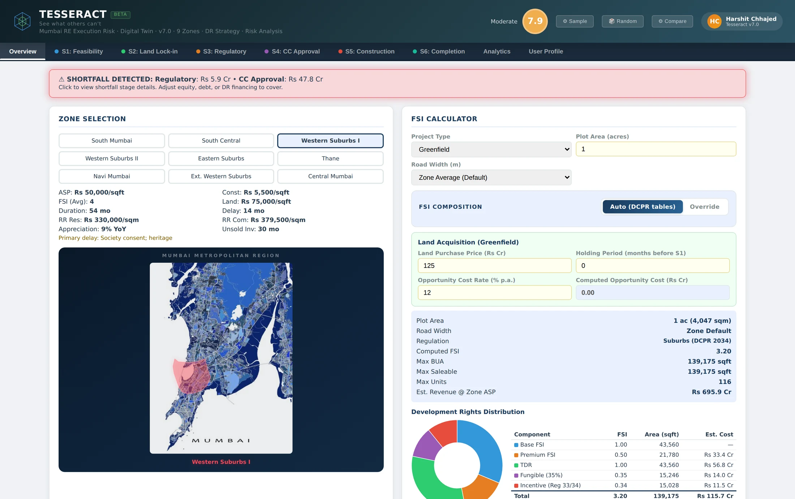
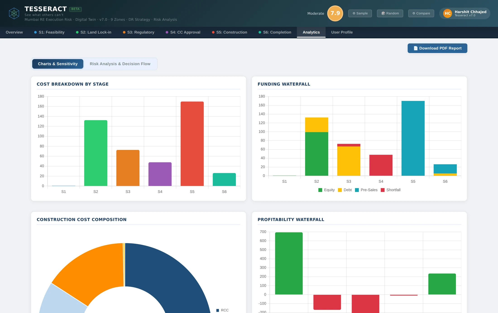

Tesseract Twin
A digital twin that models the complete 6-stage Mumbai development lifecycle, from feasibility through completion, with zone-aware costing, regulatory intelligence, and dynamic execution-risk scoring. Built on data from MahaRERA, Knight Frank, CBRE, JLL, and Anarock, calibrated across 9 zones and 405 decision variables.

Six gates. Every one modelled.
Every Mumbai development passes through six critical gates. The Twin models each one with zone-specific costs, regulatory logic, and capital chain analysis.
Calibrated against real projects, not averages.
Every capability is grounded in Mumbai's specific regulatory environment and live project data, then wired into one engine where every input moves every output.
Nine zones with calibrated ASP ranges (₹18,000 to ₹1,50,000 per sqft), construction cost benchmarks, FSI regulations, and Ready Reckoner rates sourced from MahaRERA, IGR Maharashtra, and industry reports.
DCPR 2034-compliant FSI calculator with road width, zone, and project type inputs. Models fungible FSI, TDR acquisition costs, and BMC premium financing across four payment schemes.
Left-to-right capital consumption: equity first, then debt, then pre-sales under 70% RERA escrow, then bridge financing. Automatic shortfall detection with visual alerts at the exact stage.
Per-stage success metrics roll into a live composite risk score. Every variable feeds the score in real time as assumptions change, with a stage health matrix flagging where projects strain.
Risk analysis across 1,000 simulated scenarios, plus a project decision flow that shows cumulative cash committed and the cost of bailing at every gate.
Labour cess and corporate income tax are built into the cost stack, with explicit GST treatment choices. KPIs surface both pre-tax and post-tax, so the numbers survive a CFO's review.
From assumptions to evidence.
The analytics deck turns the model into arguments: where the money goes, where it comes from, what moves profit, and how sensitive the outcome is to each assumption.

A model you can audit.
The Twin is an engineered financial instrument with a public build log. The numbers below are the model's own, not marketing rounding.
Test the project before the project tests you.
Request a walkthrough of the Twin with your own project assumptions, or explore the full build log.